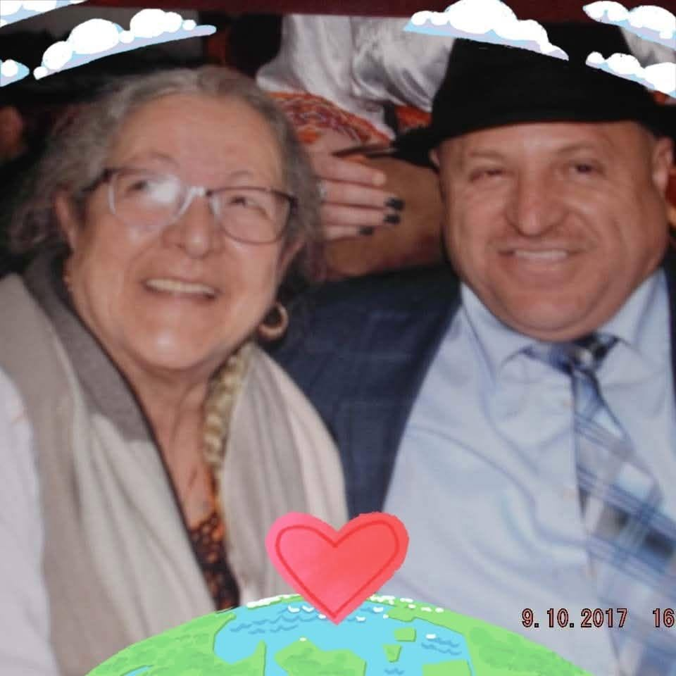

Avec la mère, va, tout s’en va
Quand la maison s’éteint d’une voix familière,
Le silence prend tout.
Même les objets semblent savoir —
La tasse oubliée,
le fauteuil immobile,
La lumière du soir posée sur les rideaux
Comme une main qui n’ose plus toucher.
On nous dit pourtant :
« C’était l’heure.
Elle souffrait trop.
Le repos était devenu une grâce. »
Et l’on acquiesce avec la raison,
Cette pauvre lampe fragile
Qui éclaire si mal les gouffres du cœur.
Oui, nous savons.
Nous savons que les corps fatiguent,
Que les années usent les épaules,
Que la douleur peut devenir une prison.
Nous savons qu’aimer quelqu’un,
parfois,
C’est accepter de le laisser partir.
Mais savoir n’empêche rien.
Car lorsqu’une mère s’en va,
Quelque chose en nous retourne à l’enfance.
On a beau porter des rides,
Payer des factures,
consoler les autres,
Au fond du chagrin
Il reste cet enfant minuscule
Qui cherche encore sa maman dans la nuit.
Et soudain,
Le mot « orphelin » cesse d’être un mot de livre.
Il entre dans la chair.
Il s’assoit à notre table.
Il respire avec nous.
Alors on pleure étrangement :
Pas seulement la mort,
Mais la dernière personne
Qui connaissait notre premier prénom de tendresse,
Celle qui se souvenait de notre voix d’enfant,
De nos fièvres,
de nos peurs,
De la façon exacte dont nous souriions
avant les blessures du monde.
Une mère emporte avec elle
Un morceau de notre commencement.
Pourtant,
au milieu de cette absence immense,
Il reste parfois une douceur discrète :
Penser qu’elle ne souffre plus.
Imaginer son visage enfin apaisé,
Délivré des longues nuits de douleur,
Comme un jardin après l’orage.
Et dans le cœur dévasté,
Une gratitude tremble encore :
Avoir été aimé ainsi,
Une fois dans sa vie,
Par quelqu’un
Qui nous regardait comme si nous étions
La chose la plus précieuse sur terre.
Les mères ne partent jamais tout à fait.
Elles deviennent une voix intérieure,
Une façon de caresser le monde,
Une patience héritée,
Un courage silencieux.
Et même brisé,
Même devenu cet enfant sans refuge,
On continue d’avancer
Avec,
au fond de soi,
La chaleur ineffaçable
De ses mains anciennes.
Djamel Metref
Ecublens le 10 Mai 2026
Hier, c'était la fête des mères, il paraît.
Bonne fête Yemma, là où tu es,
et bonne fête à toutes les mamans du monde.

← Tous les poèmes